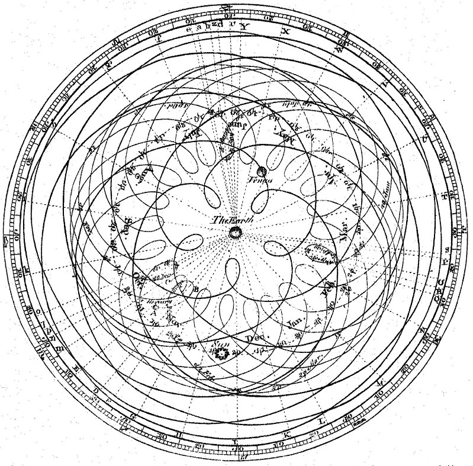

ASTR101 Ch 0-1
Ch 0 - Math Review (prealgebra)
Exponentiation and logarithms
Exponentiation (\(a^n\)) means multiplying a number by itself.
- Anything raised to the power of 0 is 1 (except 0).
- A number \(a\) raised to the \(n\)th power means it multiplies itself \(n\) times.
- For example, a1=a, a2=a*a, a3=a*a*a.
- Eg: What is 25?
- Eg: What is 32?
- Eg: Why do we say \(\sqrt{a}=a^{1/2}\)?
Logarithms
- Exponentiation asks, "what do I get when I multiply a number \(a\) by itself \(n\) times?"
- Logarithms ask, "how many times do I have to multiply a number \(a\) by itself to get \(b\)?"
- We denote the logarithm base \(a\) of \(b\) as loga(b).
- Example: log10(1000)=?
Mathematical manipulations
Order of Operations
- PEMDAS: parentheses, exponents, multiplication & division, addition and subtraction.
- Eg: What is 4*(2+3)4?
- Eg: What is 2+3*22/3?
FOIL - First, Outer, Inner, Last
- If you have a product of sums, e.g. (a+b)*(c+d), how do you evaluate it?
- Expand by multiplying the First terms in both parentheses, then the Outer, then Inner, then Last.
- (a+b)*(c+d)=a*c+a*d+b*c*b*d.
- Eg: What's (2+2)(3+5)? (First use FOIL, then use PEMDAS to check).
- Eg: What's (x+3)(x-2)?
- Eg: What's (a+2b)2?
Fractions
Multiplication and Division
\begin{align*}
\frac ab*\frac cd&=\frac{ac}{bd}\\\\
\frac ab \div\frac cd&=\frac ab * \frac dc=\frac{ad}{bc}
\end{align*}
Addition and Subtraction
\begin{align*}
\frac ac+\frac bc&=\frac{a+b}c\\\\
\frac ac-\frac bc&=\frac{a-b}c\\\\
\frac ab+\frac cd&=\frac{ad}{bd}+\frac{cb}{db}=\frac{ad+cb}{db}
\end{align*}
Percentages
Finding percentage
- Recall that equivalent fractions can be expressed multiple ways; e.g., 2/3 is the same as 4/6 or 20/30.
- A percentage is just a fraction out of 100. For example, 1/2 is the same as 50/100, so we say 1/2 is 50%. 1/4 is 25/100 so we say 1/4 of something is 25% of it.
- To find the percentage, solve the equation 2/3=x/100. What do we get?
Angles
Equivalent angles

- A red line crosses two parallel blue lines.
- First, concentrate on the lower blue line. Which angles are equal?
- Now, compare the bottom angles to the top angles. Which are equal?
Radians
- Radians are an alternative to degrees.
- There are 360° in a circle if we're talking about degrees.
- In radians, there are 2π radians in a circle.
Degree-Minute-Second (DMS)
- We can further divide degrees if we want to talk about very precise angles.
- We can divide degrees into 60 arcminutes, and each arcminute into 60 arcseconds.
Isolating Variables
- Suppose we have an equation (2+x)2+3=x2, and we have to solve for x.
- The end goal is to just have x on one side of the equation.
- Let's solve it!
Proportionality
- Suppose Yelle makes three times as much money as Xavier at her job.
- We can choose "y" to be how much Yelle makes and "x" to be how much Xavier makes. Then, y=3x.
- When we have something of the form y=[constant]*x, we say y is proportional to x, with the notation y∝x.
- Exercise: Suppose a∝b, and if b=5, a=2. What is a when b is 10?
Ch 1 - Science and the Universe: A Brief Tour
The Nature of Astronomy
- Astronomy is the study of objects that lie beyond our planet Earth and the processes by which these objects interact with one another.
- Universe is changing
The Nature of Science
Observational Science
- Objective, evidence-based, reproducible.
- Scientific Method
- Observation: Observe something.
- Question: Ask a question about the observation.
- Hypothesis: Give a possible answer to the question.
- Experiment: Come up with and perform an experiment to find out whether the hypothesis is correct.
- Analysis: Analyze the data of the experiment.
- Conclusion: Formulate a conclusion from the data.
- Repeat!
Geocentric and Heliocentric Model


The Laws of Nature
- Scientific Laws or Scientific Theories? Limitations and Evolution of Science.
- Math: The language of science
Numbers in Astronomy
- Scientific Notation (Appendix C)
- SI Units (Appendix D)
- Unit Conversion
- Astronomical Units and Constants
- Speed of light
- Light-year: Measure of the DISTANCE that light travels in one year.
Consequences of Light Travel Time
Light has finite speed!
- Light-year: A natural historical measure!
- AU: Average Earth-Sun distance, approximately 1.5x108 km.
- A history-book of the universe!
A Tour of the Universe
Overview of our Solar System
Overview of Milky Way
- Can't see the rim! Interstellar dust in-plane—some wavelengths invisible to the gas!
The Universe on the Large Scale
Universe, Cosmos, Galaxy, System, etc.
- Capitalized, "Galaxy" refers to Milky Way, uncapitalized to any galaxy
- We are part of a Local Group of over 50 galaxies, which is part of the Virgo Supercluster, with diameter of 110 MLy.
- Solar System < Galaxy < galaxy cluster < supercluster < Universe
The Universe of the Very Small
- Vacuum: On Earth, 1019 atoms/cc, interstellar gas: 1 atom/cc, intergalactic space: 1 atom/m2.
- Cosmically Abundant Elements (Table 1.1) - pattern? Atomic Fusion.
- Discerning atoms with proton number, atomic isotopes, charged atoms.
- Atomic structure: proton, neutron, electron.
- Electron radius is ~105 times the nucleus radius.
- Earth-Sun distance is ~100 times the size of the Sun.
- Matter is mostly empty space!
Four forces
- Gravity, Electromagnetism, Strong and Weak Nuclear Forces.
A Conclusion and a Beginning
- The temporal universe: